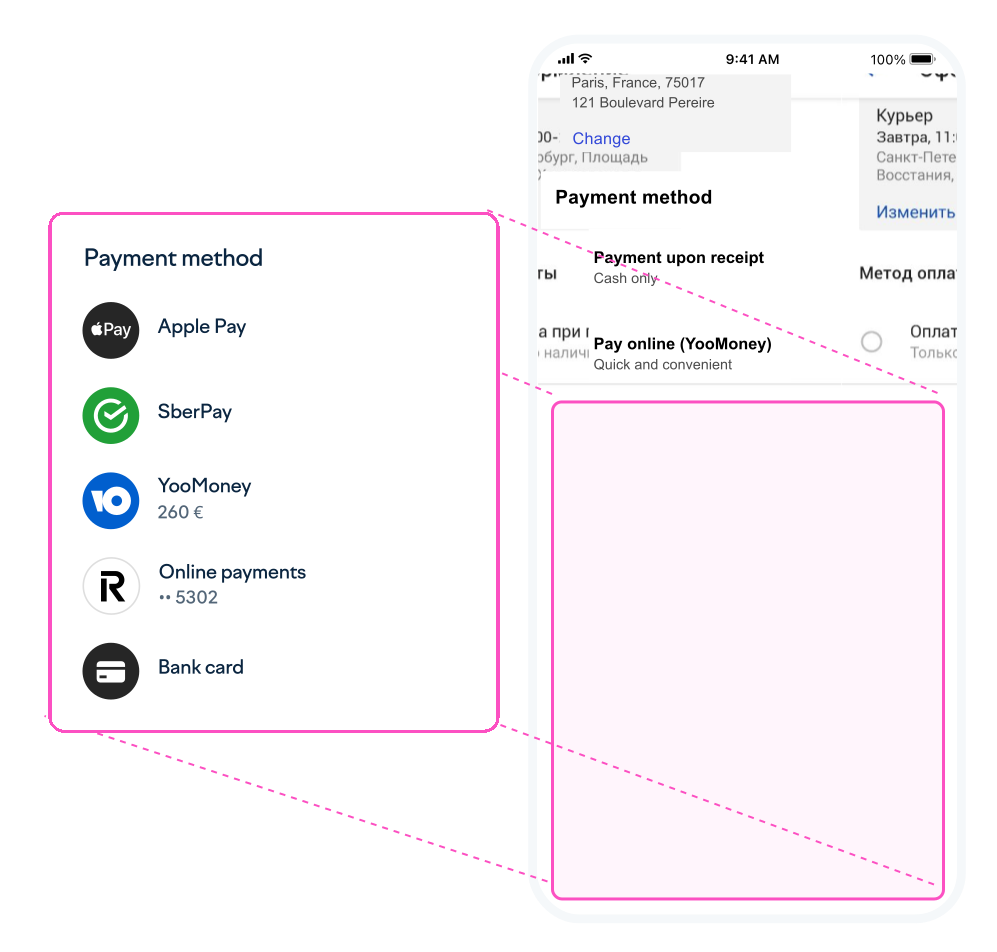

Redesigned Payment Solutions, Boosting Conversion by 12%
YooMoney: B2B Payment Leader in CIS
YooMoney is the leading online payment platform in Russia and neighboring countries in Eastern Europe and Central Asia. It serves over 214,000 online platforms and mobile apps across 75 countries and processes up to 4 million daily transactions. Businesses of all sizes, including major brands like Adidas, Reebok, iHerb and Renault, trust it.
Payment Solutions: Web Widget and Mobile SDK
YooMoney offers two key embedded payment solutions that drive its core revenue, supporting over 10 payment methods and enabling seamless transactions without leaving the website or app:
- Web Widget: A customisable tool for merchant websites, fully adaptable to match company branding with easy integration. Could be integrated manualy or via leading CMS like WordPress, Shopify, Wix, and Joomla.

- Mobile SDK: A flexible mobile payment solution that is natively integrated into iOS and Android apps.

Overview of Payment Solutions Redesign
The Web Widget and Mobile SDK redesign project focused on delivering a seamless, customisable payment experience across web and mobile platforms—boosting conversion rates and helping merchants grow their businesses.
Key highlights include:
- Product Designer Role: Led the end-to-end redesign of payment forms, shaping product vision and collaborating with cross-functional teams.
- Designer Contributions: Managed product analytics, conducted user research and usability testing, designed interfaces, and ensured consistent design systems for streamlined web and mobile development.
- Data-Driven Approach: Analysed transaction data and user behaviour across thousands of merchants to identify pain points and prioritise features like new payment methods and brand customisation.
- User-Centric and Iterative Approach: Ran customer interviews and user tests, iterating on prototypes and validating improvements through A/B testing and quantitative analytics.
This project demonstrates my ability to lead complex B2B product initiatives, deliver measurable business results, and drive innovation in payment experience design across multiple platforms.
Key Achievements for Web Widget and Mobile SDK
Led the design of payment solutions, elevating YooMoney to “Top Payment Russian Provider” (RBC, 2021). My work contributed to a 78% increase in merchants over three years, growing from 120,000 to 214,000 online platforms and mobile apps.
1. Web Widget Redesign
The payment form redesign began with the web widget, as it was more popular among merchants than the mobile SDK. Its seamless integration into web checkouts—without needing developer support—drove its widespread adoption.
The widget’s initial version was launched as an beta version to quickly test demand and prove value. After its early success, I led the development of a more advanced next version—addressing user pain points and incorporating merchant needs.
Compare the original and redesigned widget versions using the slider below to see the evolution and impact of the improvements.


Merchant Requirements: Conversion and customisation
Merchant interviews (CustDev) were essential for uncovering key business needs, including:
- Increase conversion rates.
- Integrate new payment methods, such as SberPay and linked cards.
- Provide custom branding options for merchants.
- Improve scalability and enable re-selection of payment methods.
User Challenges: Convenience and Clarity
Paying users faced significant challenges with the widget, which led to an abandonment rate of around 70%, such as:
- Difficulty recognising the active payment method.
- Ineffective placement of the payment button.
- Complexity in entering bank card details.
Heatmaps clearly showed where users struggled—for instance, missing the active payment option or not spotting the button to complete payment.
“Where do you click to change card details?”

“Where do you click to pay by card?”

Competitive Analysis
I reviewed over a dozen direct competitors and revealed common solutions like tab-based navigation for switching methods and card-style forms for entering bank details.
üí°One standout insight came from a close competitor‚Äôs step-by-step approach, which separated payment method selection from data entry. I was particularly drawn to the simplicity of this concept.
Redesign Goals
- Optimisation: Ensure adaptability to merchant websites.
- Improvement: Create an intuitive interface to boost conversion rates.
- Extension: Enable the addition of new payment methods and features.
Finding Solutions: Three Concepts
I developed three concepts to address redesign goals.
1. Updated Original
2. Accordion
3. Step-by-step
Concept Testing
Quantitative testing compared 3 concepts against the original design across metrics such as method selection clarity and ease of data entry. The step-by-step concept consistently outperformed others.
Killer Features: Adaptability and Customisation
The widget stands out for its adaptability across devices, customisation to match merchant branding, and scalability to accommodate diverse merchant needs
Adaptability: Even for Smartwatches
Seamless functionality across devices, including smartwatches, ensured convenience for users.
Brand Customisation
Merchants using custom colour schemes reported a 20% higher conversion rate.
Scalability
The widget transitions through different states, reflecting various user actions or contexts.
Launch & Wins
Support for development
Throughout the entire redesign process, I collaborated with developers to ensure technical feasibility:
- Early-stage technical checks filtered out impractical concepts.
- Animations were developed directly in Codesandbox to streamline implementation.
- Detailed specifications ensured adaptability across screen resolutions.
Below is my CodeSandbox widget example featuring hover animations and a bank card method selection, which I originally shared with the developers—and it’s still available after four years.
Successful A/B testing
A limited beta launch involving 100 merchants validated the redesign through A/B testing:
- Merchants praised the improved visual design.
- Conversion rates increased by 10% due to enhanced focus during data entry.
- Feedback revealed areas for improvement, ensuring the main launch effectively addressed merchant and user needs.
Real widget examples
More than a thousand merchants—from small shops to multi-million-dollar services—have integrated the widget into their websites. This includes major brands like Adidas, Reebok, iHerb, and Renault, where customers can even pre-order a car directly through the widget.

Final Launch Wins
The final launch successfully met all objectives and delivered a measurable impact:
- Modernised User Interface: Enhanced usability and streamlined the payment process.
- Step-by-Step Data Entry: Improved user focus, boosting conversion rates by 12% and generating an additional $450K in monthly revenue.
- Customisation: Customise widget designs, leading to a 20% higher conversion rate for customised widgets.
- Scalability: Enabled merchants to scale the list of methods and add features like loyalty programmes.
- UX Concept Success: The redesigned UX concept was reused across 8 company projects, showcasing its versatility and effectiveness.
üìàThese achievements solidified YooMoney's position as a leader in payment solutions while driving significant business growth.
2. Mobile SDK Redesign
After successfully redesigning the widget, I revamped the Mobile SDK payment form embedded in iOS and Android mobile apps.
Research and Goals: Closing Payments Gaps
The initial version of the Mobile SDK was developed 5 years ago and had remained unchanged since. During this time, numerous business requests accumulated, and clear UX issues became apparent.
As part of the research process, users were surveyed about the current version, and product needs and technical constraints were gathered from developers.
Based on the findings, Key problems were identified, leading to these improvement goals:
- Simplify payment method selection.
- Improve the card payment experience.
- Add new payment options, such as linked cards.
- Enable brand customisation.
Streamlined Payment Flow
The redesigned payment flow simplified the process from two screens to one, with key improvements:
- Transparent Information: Order details and payment amount are always visible for clarity.
- Prominent Action Button: The CPA button is easy to find and use.
- Modern, Clean Design: A clearer, less cluttered interface keeps users focused on completing payment.
These changes reduce friction and make payments quicker and more user-friendly, boosting conversion rates.
Single-line Card Entry
The redesign brings a single-line card entry block that consolidates all necessary fields—card number, expire date, and CVC—into one straightforward, compact interface. Key details from the screen include:
- Unified Input: All card details are entered in one block, made entry faster and easier on mobile.
- Instant Validation: Fields provide immediate feedback for errors or valid entries.
- Card Scanning: Users can scan their card for quick, error-free input.
- Mobile-Friendly: Large fields and clear labels ensure a smooth mobile experience.
üí∞Enhancing the bank card payment flow was essential, as cards made up 85% of all spending. Streamlining this process boosted card payment conversion by 11%, significantly improving user experience and business results.
Recurrent Card Payment Benefits
The redesign introduced the option to link bank cards for recurring payments, streamlining future transactions. Key features include:
- Easy Card Linking: Users can save their card after the first payment with a simple toggle.
- Quicker Repeat Payments:  No need to re-enter card details, speeding up checkout.
- Higher Conversion: Fewer barriers mean more completed transactions.
- Subscriptions Enabled: Merchants can offer subscriptions and auto-renewals.
üí∞Recurring card payments streamline the user experience and drive higher retention and predictable revenue, resulting in a 5% boost in overall revenue from repeat business and subscriptions.
Customisation and Dark Theme
The solution got customisation of brand colours for active elements, enabling them to match the merchant’s branding. A dark theme was also added, which is was essential for mobile apps.
Redesign Achievements
- Simplified the payment logic and confirmation, boosting conversion rates by 5% and generating an additional $165K in monthly revenue.
- Optimised the bank card payment flow, increasing conversion by 11% for this primary payment method
- Introduced new features, such as paying with bonuses.
- Improved brand customisation and added a dark theme.
Final Reflection
The redesign of payment forms remains a standout achievement due to its user-centric and iterative approach.
This project is one of my most memorable, thanks to a strong team and a product we were proud of. We marked a milestone when the widget’s turnover topped several hundred million dollars a month. To celebrate, I designed custom stickers for me and my team, which were decorated my laptop as a reminder of our achievements.